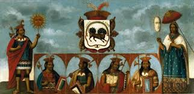

La MOnarquia Compuesta en el sacro imperio
La monarquia compuesta como un sistema donde reinos, estados y señorios coexistian bajo un mismo monarca, manteniendo su identidad institucional y legal. Esta, que contrasta con las monarquias obsolutistas, permitio una autonomia significativa para los diferentes, lo que se refleja en la estructura politica que los españoles encontraron al llegar a America. Esta forma de gobernanza contribuyo a una mayor resistencia y adptacion por parte de las elites indigenas ante los conquistadores.
la estructura politica de españa y su aplicacion en america
Se enfatiza que España no era un solo reino, sino una union de reinos con autonomia, lo que se evidencia en la existencia de comunidades autonomas en la actualidad. Este sistema politico fue replicado en el virreinato, permitiendo que los curacas y señores indegenas mantenga una autonomia a cambio de lealtad a la corona. Las dinamicas politicas en la peninsula influyeron directamente en como se administro el territorio virreinal.
alianzas estrategicas entre incas y conquistadores
El discurso destaca que al llegar los españoles, el Imperio Inca estaba debilitado por guerras internas. Los incas como Atahualpa buscaron alianza con Pizarro para enfrentar a su rival Huascar. Este contexto politico permitio a los españoles aprovecharan demostrando asi que la conquista no fue solo por superioridad sino por un juego de alianzas y estrategias politicas complejas.
la vida de los desendientes incas tras la Conquista
Los analisis revelan que estos no fueron exterminados sino que lograron mantener un estatus economico y social favorable bajo el dominio español, muchos se convirtieron en nobles, administrando tierras y formando alianzas matrimonialescon las elites españolas, lo que demuestra una adaptacion y negosacion polotica significativa en el regimen colonial
la Institucionalizacion de las panacas incaicas
Se discute como Carlos V instiyucionalizo a las panacas incaicas mediante un consejo que representaba las distintas panacas de la nobleza inca. Este consejo fue compuesto por 24 electores permitiendo a las elites indigenas participar en la gobernanza del virreinato, mostrando que las estructuras de poder prehipanicas no fuern desmanteladas sino que se adaptaron a las nuevas realidades coloniales
el Desenfoque de la historia oficial sobre los incas
Critica la narrativa historica tradicional en la que los incas como victimas pasivas de la conquista. A traves de ejemplos claros y evidencias demuestra que los incas y sus lideres fueron actores activos en las conquista, mediante la diplomacia y alianzas para preservar su cultura y poder. Este subraya de revisar y reinterpretar la historia andina para comprender mejor su complejidad y matices.
